1. 今回の授業
コンピューター内でのデータの表現として、今回は普段なにげなく扱っている文字の表現について説明します。
文字コードは歴史的経緯が複雑です。まず、現在の仕組みを読むための見取り図を押さえましょう。
1.1. まず押さえる：文字・番号・バイト列
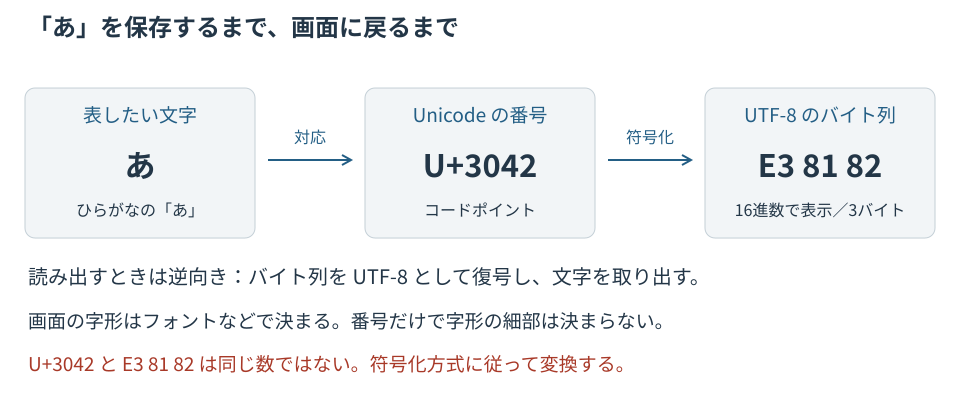
Unicodeは文字の番号などを定める規格、UTF-8はその番号をバイト列にする方式です。「UnicodeかUTF-8か」という二者択一ではありません。保存するときの符号化方式と、読み出すときの方式を合わせることが、文字化けを防ぐ基本です。
もう1つ、「1文字」という言葉に注意しましょう。たとえば「が」は、1つのコードポイントでも、「か」と結合濁点の2つのコードポイントでも表せます。
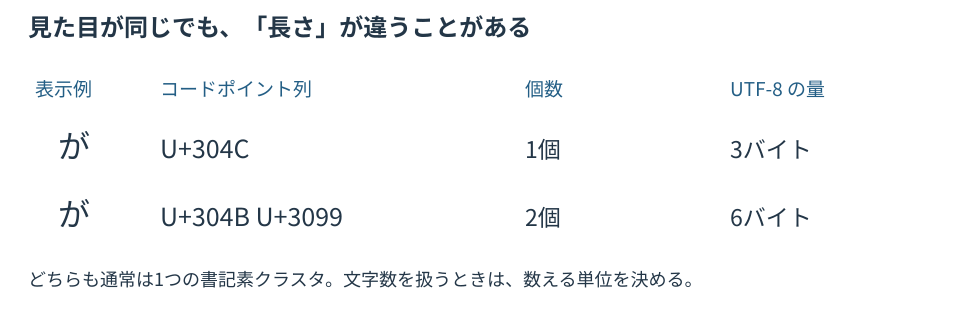
見た目の1文字に近いまとまりを書記素クラスタと呼びます。番号の個数・バイト数・書記素クラスタ数は別々の量です。詳しい仕組みは後の正規化と絵文字の節で説明します。
|
読み進め方：最初に必要なところと、仕組みを掘り下げるところ
|
1.2. 文字コードの変遷
文字コードとはコンピューター内部での文字表現の方法です。コンピューター内部では整数や浮動小数点といった数値を2進法で表現されていたように、文字もコンピューター内部では2進法で表現されています。しかし、文字をコンピューター内部で表現する方法は、文字そのものの複雑さのために数値表現と比べて遥かに煩雑です。
コンピューター上で最初に文字を扱う必要性が生じたのは、おそらくコンピューターとのデータのやりとりのためでしょう。プログラムやデータを人間が解釈しやすく表示するには、特定のコンピューターの機種上でのみ文字と内部表現の対応がとれていれば十分でした。やがて、コンピューターが計算以外の用途、執筆やコンピューターネットワークを介したコミュニケーションに使われるようになると、異なる機種のコンピューターでも同様に文字が読めるように何らかの共通表現を定める必要が生じました。
ASCII
米国で1963年に策定され、現在もUTF-8の一部としてそのまま生き続けている、もっとも基礎的な文字コードがASCII(アスキー、American Standard Code for Information Interchange)です。後に概念が整理され、ASCIIは7ビットの符号位置が割り当てられた符号化文字集合として位置づけられます。
| 下位＼上位 | 0_ | 1_ | 2_ | 3_ | 4_ | 5_ | 6_ | 7_ |
|---|---|---|---|---|---|---|---|---|
_0 |
NULL |
DLE |
SP |
|
|
|
|
|
_1 |
SOH |
DC1 |
|
|
|
|
|
|
_2 |
STX |
DC2 |
|
|
|
|
|
|
_3 |
ETX |
DC3 |
|
|
|
|
|
|
_4 |
EOT |
DC4 |
|
|
|
|
|
|
_5 |
ENQ |
NAK |
|
|
|
|
|
|
_6 |
ACK |
SYN |
|
|
|
|
|
|
_7 |
BEL |
ETB |
|
|
|
|
|
|
_8 |
BS |
CAN |
|
|
|
|
|
|
_9 |
HT |
EM |
|
|
|
|
|
|
_A |
LF |
SUB |
|
|
|
|
|
|
_B |
VT |
ESC |
|
|
|
|
|
|
_C |
FF |
FS |
|
|
|
|
|
|
_D |
CR |
GS |
|
|
|
|
|
|
_E |
SO |
RS |
|
|
|
|
|
|
_F |
SI |
US |
|
|
|
|
|
DEL |
ASCIIは米国で日常的に用いる文字として、数字、アルファベットの大文字・小文字と括弧、ピリオド、コンマなどの役物、ドル記号等を含んでいます。黄色の文字は表示のための文字ではなく、ディスプレイやプリンターの動作等をコントロールするために使われる特別なコードで制御文字といいます。また、SPは空白記号(スペース)を表しています。
この表のすべての文字の位置は16進法で特定できます。上位桁を表す列0〜7と下位桁を表す行0〜Fの2つの座標を用います。
たとえば文字 A は上位の「4_」の列と下位の「1」の行の交差する位置にありますので対応する値は16進法で \(41_{(16)}\) 、2進法では、\(1000001_{(2)}\) となります。また文字 a は上位の「6」の列と下位の「_1」の行の交差する位置にありますので対応する値は16進法で \(61_{(16)}\) 、2進法では、\(1100001_{(2)}\) となります。ASCIIの英字 A〜Z / a〜z に限れば、右から6ビット目（値32の桁）を反転すると大文字・小文字を相互変換できます。英字以外にこの操作をすると、別の記号などに変わってしまいます。
16進法の上位桁が0〜7までしか無いことから、上位桁は3ビットであることがわかります。つまり、ASCIIに含まれるすべての文字は、7ビットでその位置を特定できることがわかります。
|
今後は16進法と2進法による数の表現に、C, Java, Python, Ruby, Julia, JavaScript など多くのプログラミング言語でそのまま使える以下の表記を用います。
|
コンピューター内部での数としての表現でも、文字がアルファベット順に並んでいるおかげで、符号値の大小比較が、そのままアルファベット順の比較になります(ただし大文字と小文字が混ざる場合は、すべての大文字がすべての小文字より前に来ることに注意してください)。
改行コード
普段、文章を書いている時に、なにげなく Enter/Return キーを押して改行しているとき、コンピューター内部では、「改行」も制御文字として対応する改行コードが記録されています。
面倒なのは歴史的経緯もあって、使っているOSによって改行の符号化も異なるということです。以下の表が対応表です。古い Mac(OS9)を除けば、Unix/Linux と macOS の LF(Line Feed)と、Windows の CR+LF (Carriage Return + Line Feed) の2種類の改行コードが用いられています。LFはもともとタイプライターで紙を縦に1行分送る動作に相当します。キャリッジはタイプライターの、紙をはさんで横に1文字ずつずらしてゆく部位です。このキャリッジが行末まできたときに、行頭位置まで戻す動作をキャリッジ・リターン(CR)といいます。カーソルで説明すると、カーソルを一行下にずらすのがLFで、行末に来たカーソルを行頭に戻すのがCRです。
| OS | 改行コード | 制御文字 | 表現 |
|---|---|---|---|
Unix/Linux |
|
LF |
|
Mac(OS X/macOS) |
|
LF |
|
Mac(OS9以前) |
|
CR |
|
Windows |
|
CR+LF |
|
これはOSごとの伝統的な慣習です。実際の改行方式はアプリや設定でも変わります。LFに対応していない古いWindowsアプリなどでは、LFのファイルを開くと改行が認識されない場合があります。
JIS X 0201
世界各国でコンピューターが使われはじめると、米国のASCIIをもとに1967年に国際勧告ISO/R 646が定められました(後に国際規格ISO/IEC 646となります)。当時は、まだ国を跨ってコンピューターの文書がやり取りされることが想定されていなかったため、規格では表の中で国ごとに自由に文字を割り当ててよい位置が定められました。
日本では、この勧告をもとに1969年に初の文字コード規格として JIS C 6220(1987年に JIS X 0201 へ改称)が制定され、また、その際、以下の記号の置き換えをしました。
-
ASCIIの
0x5Cの位置のバックスラッシュ記号\を¥に置き換え -
ASCIIの
0x7Eの位置のチルダ記号~をオーバーライン‾に置き換え
また、ASCIIの7ビットから8ビットの文字コードに拡張し、新たに増えた128文字分の領域を利用して、いわゆる半角カタカナを追加しました。コンピューター上で漢字や平仮名が表現できなかった時代には、このカタカナが唯一の日本語の文字表現でした。
|
この日本独自の文字の置き換えは、現在に至るまで混乱を引き起こしています。
現代のWindowsやmacOSで、特にOfficeアプリケーションなどでバックスラッシュ（\）が円マーク（¥）として表示される問題は、JIS X 0201中の置き換えの問題というわけではありません。Unicodeには円マーク用の専用コードポイント( 過去のデータとの互換性から、日本ではバックスラッシュ記号 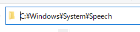 これは、Cドライブの下の Windows フォルダの中にある System フォルダのさらに中にある Speech フォルダを表しています。この箇所、もともと以下のように表示されることを意図しています。
念のため以下に同じ文字列を図でも表示しておきます。 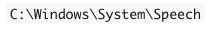 やはり、バックスラッシュの方が区切り記号としてスッキリして見やすいですね。 表示はアプリ、フォント、言語設定、版によって異なります。見た目だけで円記号かバックスラッシュかを判断せず、コードポイントを調べると区別できます。 |
この問題は、日本のコンピューター黎明期の互換性のために設けられた仕様が、グローバル化したソフトウェア環境の中で今日まで引き継がれている例です。同じコードポイントに対して異なる字形(グリフ)を割り当てる慣習が、Unicode時代になっても完全には解消されていません。プログラミングやパス指定など、バックスラッシュが重要な意味を持つ場面で混乱を招くことがあるため、注意が必要です。
以降では、文字コードをより体系的に理解するための枠組みについて説明します。
1.3. 字体、字形、書体
まず、文字コードの理解の基本となる言葉の定義をします。なお、この定義はひろく共通認識となっているわけではありません。この授業での定義として読んでください。
- 字体
-
文字を構成している点や線のつながり。構造・骨組みとしての文字の抽象的概念。
- 字形
-
字体を実際に手書き・印刷・画面表示などで表現した図形としての文字
- グリフ
-
コンピューター内でのデータとしての字形表現
- 書体
-
一貫したデザインで作成された字形の集合
【例】明朝体、ゴシック体など - フォント
-
コンピューターで用いるデータとしての書体。
【例】游明朝、MS ゴシック、メイリオなど
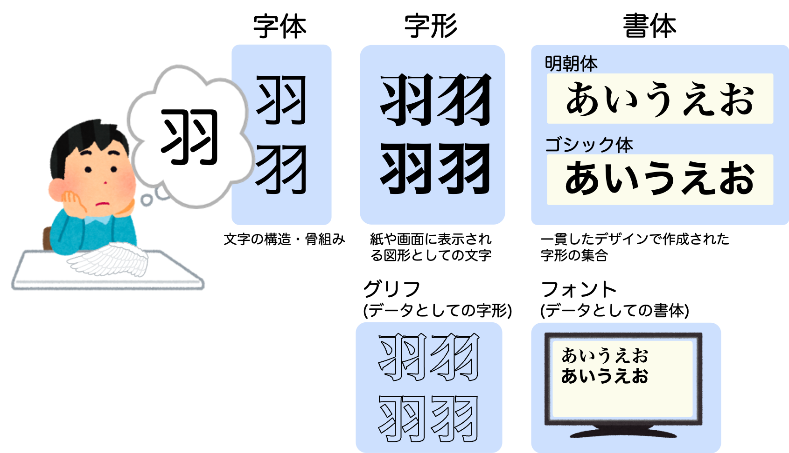
字体と字形、字形と書体の境界は明確にあるわけではありません。
コンピューターでも異なる字体に対して同じ内部表現が割当てられている例がたくさんあります。たとえば、文字「そ」と「き」に対して、下の図ではそれぞれ異なる字体が示してあります。この文字については字体の違いを文字コードでは表現できません。それぞれ左側が「ヒラギノ角ゴシック」右が「凸版文久ゴシック」というフォントの違いによって、はじめて区別できるようになります。
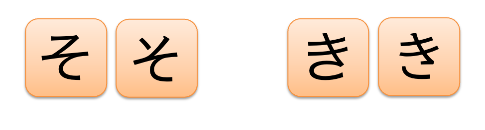
1.4. 符号化文字集合と文字符号化方式
- 符号化文字集合(Coded Character Set: CCS)
-
コンピューターで用いる文字を集めて文字ごとに対応する番号を付けたもの。要はコンピューターで用いる文字を集めた表で、表の座標で表の中の文字を一意に特定できるようにしたものです。この座標もしくは番号を符号位置(コードポイント)といいます。
- 文字符号化方式(Character Encoding Scheme: CES)
-
符号位置をコンピューター内部で表現する方法。
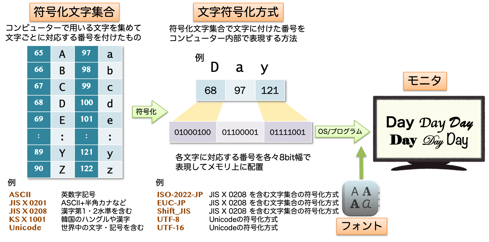
ASCIIが作られた時代には、まだ 符号化文字集合と文字符号化方式のような概念は明確には存在せず、両者の概念は未分化でした。 現在のほとんどのコンピューターはバイトアドレッシング方式といって、1バイト単位でメモリ上のデータ格納場所を指定して読み取っているため、1バイト=8ビットの領域に、それよりビット数の少ない7ビットのASCIIにより表現された文字1文字分のデータを収めることができます。 メモリが高価であった時代には、8ビット単位でデータを扱うマシンでも、8文字を7バイト(56ビット)に隙間なくつめて収納する方式もありました。通常のテキストファイルでは1文字を1バイトに収める方式が一般的です。7ビットを詰める方法自体が使えなくなったわけではありません。
やがて、世界中の文字を含んだ符号化文字集合が作られるようになると符号位置を表す数字が巨大になり、その表現には2バイト以上必要になってしまいました。2バイト以上のデータが続く場合、文字の読み取り開始位置を間違うと、まったく違う文字と解釈してしまう恐れがあります。そのような曖昧さが発生しないように、コンピューターに符号位置を格納する方法を取り決める必要があります。
ASCII や JIS X 0201 は、互換性を保つように他の符号化文字集合に取り込まれて利用されていますので、以降では、ASCIIやJIS X 0201 を符号化文字集合として話を進めます。
発展：日本の文字を含む符号化文字集合
ASCIIとJIS X 0201の後に日本で標準化された代表的な2つの符号化文字集合 JIS X 0208 と JIS X 0213 について概観します。
JIS X 0208やJIS X 0213 などの日本語文字集合では、文字の位置を 面区点 という座標で表します。この位置を表す座標のことを 面区点番号 と呼びます。
-
面：文字集合の大きな区画。面の概念はJIS X 0213で導入されたもので、JIS X 0208は全体が1つの面に相当し、JIS X 0213には1面と2面がある
-
区：各面内の行に相当し、1〜94までの区画がある
-
点：各区内の列に相当し、1〜94までの位置がある
94という数は、ASCIIの7ビットのうち制御文字と空白、DELを除いた領域(0x21〜0x7E)に収録できる文字数94と一致します。また、この領域を2つ分用いれば 94×94=8,836 となり当時想定されていた日本語の文字数を十分に含んでいたことから、このような構成になりました。
たとえば、JIS X 0208 と JIS X 0213 では、文字「あ」は1面4区2点に配置されています。これを、 1-04-02 のように表記します。
JIS X 0208
JIS X 0208で定められた第一水準漢字2,965字と第二水準漢字3,390字の計6,355字の漢字、および図形文字524字を含む計6,879文字の符号化文字集合です。2バイト(16ビット)の符号位置を用います。1978年に初版が制定され、1983年、1990年と改訂を重ねながら、日本語処理の基盤として広く普及しました。
非漢字としては、記号147字(1〜2区)、英数字62字(3区)、ひらがな83字(4区)、カタカナ86字(5区)、ギリシャ文字48字(6区)、キリル文字66字(7区)、罫線素片32字(8区)の計524字を含み、漢字は使用頻度にしたがい、第一水準と第二水準に分類して収録されています。
- 第一水準漢字（2,965字）
-
常用漢字を中心とした使用頻度の高い漢字です。16〜47区に配置され、日本語文書の95%以上をカバーします。新聞・雑誌での使用頻度、教育漢字、行政文書での使用を基準に選定されました。
- 第二水準漢字（3,390字）
-
人名用漢字、地名漢字、専門分野で使用される漢字です。48〜84区に配置されています。戸籍法施行規則で認められている人名用漢字や、学術・医学・法律などの専門分野の漢字が含まれます。
日常的に用いるほとんどの文字は、この文字集合で事足ります。前述の JIS X 0201 は、7ビットおよび8ビットでの符号化が想定されており、8ビットを用いる場合には7ビットから新たに増える128文字分の領域にカタカナを割り当てました。JIS X 0201 と JIS X 0208 には両者とも数字、カタカナ、英語アルファベットが定義されているため、JIS X 0201 に含まれる文字をいわゆる半角文字(半角英数、半角カタカナ)、JIS X 0208に含まれる文字を全角文字(全角英数、全角カタカナ)として区別をしています。
もともとは符号化文字集合に含まれる文字自体にはそもそもその字形まで規定する意図はなかったはずですが、半角文字と全角文字は1980年代中盤から1990年代にひろまったワープロ専用機で定着しました。当時のワープロはすべてのひらがなと漢字が同じ幅と間隔で配置されるいわゆるベタ組みで正方形の枠を並べた中に各文字を配置していました。しかし、JIS X 0201 に含まれる文字については、その半分の幅で組まれ、半角英数、半角カタカナなどと呼ばれて JIS X 0208 に含まれる文字と区別されました。
|
Microsoft Word は、英語の文字の組み方に倣っており、ベタ組みではありません。また、フォントによっても文字の幅は異なるため、半角文字といっても、かならずしも全角文字の半分の幅にはなりません。(Windowsのメモ帳では半角文字は全角文字の半分の幅になるように表示されます。)
半角や全角という呼称は必ずしも実態を反映していませんが、Unicodeでは半角カタカナに “HALFWIDTH KATAKANA”、全角英数字には “FULLWIDTH LATIN/DIGIT” という名称が与えられています。 |
|
いわゆる半角と全角の使い分けについては、Word等で文章を書くときは次の方針に従うのがおすすめです。
|
JIS X 0213
JIS X 0213は2000年に制定され（2004年に改正）、JIS X 0208では対応できなかった文字ニーズに応えるために開発されました。JIS X 0208 の拡張であり、JISで定められた第一水準と第二水準の漢字に加えて、第三水準と第四水準の漢字3,695文字（2004年の改正後の数。2000年の初版では3,685文字）および、非漢字記号を含む符号化文字集合です。
-
第1面: JIS X 0208の文字を包含し、新たに第三水準漢字を追加
-
1区〜94区、各区に1点〜94点
-
JIS X 0208のすべての文字(6,879文字)が含まれる
-
さらに第三水準漢字1,259字と非漢字記号等が追加
-
-
第2面: 第四水準漢字を中心とした追加文字
-
1区〜94区、各区に1点〜94点
-
主に第四水準漢字2,436字を収録
-
人名用漢字、地名漢字、古典籍の文字など
-
理論上は各面で94×94=8,836の符号位置が可能ですが、JIS X 0213は実際にはこの範囲をすべて使い切ってはいません。全ての区画を使い切っているわけではなく、文字の種類ごとに区画を割り当てています。いずれにしても、JIS X 0213 の符号位置は以下のように基本的に2バイト(16ビット)で表現可能です。
-
面の表現: 面番号（1または2）は1ビットで表現可能
-
区の表現: 94区なので7ビット（128通り）で十分表現可能
-
点の表現: 94点なので同じく7ビットで表現可能
実際の符号化では、面区点番号を文字符号化方式(ISO-2022-JP, Shift_JIS、EUC-JPなど)によって異なる方法でバイト列に変換します。
-
Shift_JIS: 従来のShift_JIS(WindowsのCP932を含む)が符号化できるのは概ねJIS X 0208の範囲(CP932はこれにNEC・IBM拡張文字を加えたもの)。JIS X 0213に対応した拡張版のShift_JIS-2004では第三・第四水準の漢字も2バイトで符号化できるが、普及は限定的
-
EUC-JP: 1面は2バイト、2面は一部でサポートされ3バイト
-
ISO-2022-JP: 素の規格(RFC 1468)はJIS X 0208しか扱えないため第一・第二水準のみ。JIS X 0213対応版(ISO-2022-JP-2004)では1面・2面も扱える
したがって、JIS X 0213自体は符号化文字集合として2バイトの符号位置を使用しますが、実際のファイルやメモリ上での表現方法は選択した文字符号化方式によって決まります。
|
収録文字の選定基準
この選定過程では、情報処理学会や文字研究者、出版社、官公庁などからの意見も取り入れられました。第三水準には1,259字、第四水準には2,436字の漢字が追加され、JIS X 0208と合わせると約1万字の漢字をカバーすることになりました。 JIS X 0208が最初に策定された1978年には、コンピューターを用いて日常的に情報伝達をするには十分と考えられる文字集合が考えられていました。しかし、コンピューターの普及により、当初の想定を超えて、これらの文字集合が、歴史資料や文学作品の電子化といった文化の担い手としての重責まで負わされることになりました。 当時の規格に対しては、いわゆる文化人などからの批判が多く見られましたが、そもそも技術やコンピューターを取り巻く社会事情が全く異なっていた点を考慮する必要があるでしょう。 |
発展：Unicode以前の日本の文字の符号化方式
かつては、主として以下の3種類の符号化方式がWebページ作りや、プログラミング、文書作成等の様々な場面で、混在して使われていました。いずれも JIS X 0208 を扱うための方式ですが、設計思想や利用環境が異なります。それぞれの特徴を以下の表にまとめます。
表の列見出しにある「自己同期性」とは、バイト列の途中から読み始めても文字境界を判定できる性質のことです。後述するように、Shift_JIS にこの性質がないことが、思わぬセキュリティ問題を引き起こした例もあります。なお、完全な自己同期性をもつのは後述するUTF-8で、EUC-JPはASCIIのバイトと日本語のバイトを混同しないというだけで、2バイト文字同士の境界を途中から判定することはできません。
| 方式 | 主な用途 | 通信ビット幅 | 状態 | 半角カナの扱い | 自己同期性 |
|---|---|---|---|---|---|
ISO-2022-JP |
電子メール |
7ビットでもOK |
あり(モード切替) |
含まない |
なし(モード把握が必要) |
Shift_JIS |
Windows系 |
8ビット |
なし |
1バイトで表現 |
なし(2バイト目がASCIIと重なりうる) |
EUC-JP |
UNIX系 |
8ビット |
なし |
2バイトで表現 |
不完全(ASCIIと日本語のバイトは重ならないが、2バイト文字同士の境界は途中からは判定できない) |
以下では、それぞれの方式について、具体的な符号化例とともに見ていきます。各例は、その方式の設計上の特徴がよく現れるように選んでありますので、表を見るときには 「見どころ」 に注意してください。
ISO-2022-JP
いわゆるJISコードとよばれている符号化です。文字集合としてASCIIとJIS X 0208を含みますが、JIS X 0201の半角カタカナは含まれません。ASCIIに属する文字は1バイト、JIS X 0208の漢字・ひらがな・全角カタカナなどは2バイトを用いて表現する可変長符号化方式です。
各バイトの8ビット目は使わないように設計されているため、7ビット通信環境でも問題なく使用できます。そのため、インターネット初期の電子メールシステムで広く採用されました。
複数の符号化文字集合を3バイトの制御コード(エスケープシーケンス)により切り替えて扱います。そのため、現在どの文字集合で書かれているかは局所的には判断できず、データを先頭から順に読み進めて切り替え制御を確認する必要があります。
以下の表は ISO-2022-JP で「ABあい\n」を符号化した際のバイト列です(最後の \n は Line Feed による改行を表しています)。バイト列の値はすべて16進表記です。8ビットのうち最上位ビットが一切使われていません(つまり、各バイトの16進表記の上位桁が8以上になることがありません)。ASCII互換ですが、日本語の JIS X 0208 の文字を使うときには切り替えのための3バイトの制御コードが挿入されていることがわかります。日本語から、再びASCII文字を用いるときにはASCIIモードに復帰するための3バイトの制御コードが挿入されます。
| バイト列 | 41 |
42 |
1B |
24 |
42 |
24 |
22 |
24 |
24 |
1B |
28 |
42 |
0A |
|---|---|---|---|---|---|---|---|---|---|---|---|---|---|
文字 |
|
|
|
|
|
|
|
|
|
|
|
||
備考 |
ASCII |
JIS X 0208へ |
JIS X 0208 |
ASCIIへ復帰 |
|
||||||||
|
この例のポイント
|
ISO-2022-JPは、7ビット通信環境でも使えるように設計された符号化方式で、モード切替で複数の文字集合を扱います。
区と点の番号にそれぞれ 0x20 を加えることで、符号化します。
以下は、JIS X 0208 モードでの面区点からの変換の例です。
-
「あ」の(区番号, 点番号) = (4, 2)
-
第1バイト = 区番号
4+0x20=0x24 -
第2バイト = 点番号
2+0x20=0x22 -
結果:
0x240x22
-
Shift_JIS
マイクロソフトが採用し MS-DOS や Windows で広く使われてきた符号化で、符号化文字集合 JIS X 0201 と JIS X 0208 を、それぞれ1バイトと2バイトで符号化する可変長符号化方式です。Shift_JIS はさらにマイクロソフトで独自拡張されました。日本語のほとんどの文字は2バイトで表現されます。後で示すようにShift_JISを依然として用いている大企業のWebサイトが複数あります。
バイト列 |
|
|
|
|
|
|
|
|
|---|---|---|---|---|---|---|---|---|
文字 |
|
|
|
|
|
|
|
|
|
この例のポイント
|
Shift_JISでは区点番号をやや複雑な方法で符号化しますので、ここでは詳細には触れません。
例:「表」(41区29点)の場合
-
第1バイト =
0x81+ (41 - 1) / 2 =0x81+ 20 =0x95 -
第2バイト =
0x3F+ 29 =0x5C -
Shift_JIS での「表」 =
0x950x5C
（この式は奇数区のうち区番号1〜61、点番号1〜63の場合に使えます。区番号63以上、偶数区、点64以上では別のオフセットが必要です。）
EUC-JP
EUC-JP(Extended Unix Code packed format for JaPanese)は、UNIXとよばれるOS上で日本語を扱う際に用いられてきた文字コードです。ASCIIの文字は1文字1バイト、それ以外のほとんどの日本語の仮名・漢字などは2バイトで符号化される可変長符号化方式です。2バイトの符号化では1バイト目も、2バイト目も8ビット目の最上位ビットが1になっており、ASCIIの符号と絶対に重ならないように設計されています。いわゆる半角カタカナも2バイトで符号化されています。また、JIS X 0212補助漢字に該当する文字は3バイトで符号化されますが、同様に2バイト目と3バイト目の最上位ビットは1になるように設計されています。
バイト列 |
|
|
|
|
|
|
|
|
|
|
|---|---|---|---|---|---|---|---|---|---|---|
文字 |
|
|
|
|
|
|
|
|||
|
この例のポイント
|
EUC-JPは単純な方法で面区点をバイト列に変換します。
例：「表」(41区29点)の場合
-
第1バイト =
0xA0+ 41 =0xC9 -
第2バイト =
0xA0+ 29 =0xBD -
EUC-JPでの「表」 =
0xC9BD
いわゆる半角カタカナの場合、第1バイトを 0x8E(Single Shift 2)とし、第2バイトには JIS X 0201 の半角カナコード(7ビット)に 0x80 を加えた値を置きます。例: 「ｱ」は JIS X 0201 の8ビット符号では 0xB1 (7ビットのカナ集合では 0x31)なので、EUC-JP では 0x8E 0xB1 (= 0x31 + 0x80)となります。
3方式の比較まとめ
ここまで見てきた3方式を比較します。
| 文字コード | バイト構造 | 特徴 |
|---|---|---|
ISO-2022-JP |
ASCII: |
全バイトの最上位ビットが0(7ビット安全)。モード切替が必要 |
Shift_JIS |
ASCII / 半角カナ: |
2バイト目はASCIIと重なる範囲があり、誤検出の可能性がある |
EUC-JP |
ASCII: |
日本語のバイトはすべて最上位ビットが1。ASCIIと混同しない |
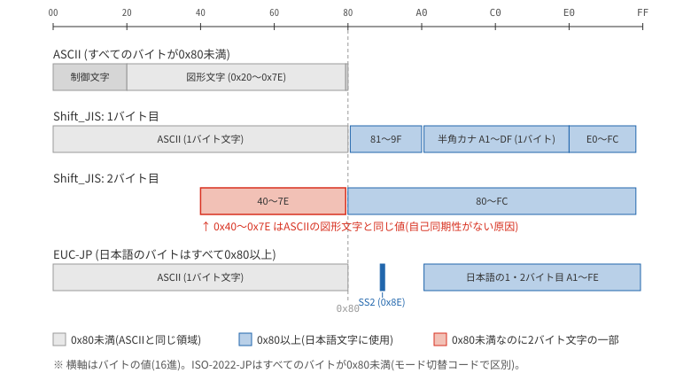
直感的には、同じ「A表」という文字列を3方式で符号化すると、たとえば以下のように違ってきます (\n は省略)。
| 方式 | バイト列 | バイト数 |
|---|---|---|
ISO-2022-JP |
|
9バイト |
Shift_JIS |
|
3バイト |
EUC-JP |
|
3バイト |
ISO-2022-JPは漢字を1文字使うだけで切替コードのオーバーヘッドが発生するため、短い日本語ではバイト数が膨らみます。一方、長い日本語であれば1度の切替で済むので、相対的なオーバーヘッドは小さくなります。Shift_JIS と EUC-JP は同じバイト数ですが、Shift_JIS は2バイト目にASCIIと重なる 0x5C などの値が現れるのに対し、EUC-JP は2バイト目も最上位ビットが1の値しか出ないため、ASCIIと混同されないという違いがあります。
1.5. Unicode の基礎
世界中の文字を含む文字集合 Unicode
インターネットで世界中のWebページにアクセスできる時代になると、国ごとに異なる文字コードでWebページが記述されていると、閲覧時にはどの符号化文字集合かがわからず、いわゆる文字化けが頻発しました(英語のWikipediaでもmojibakeという項目があります)。また、世界中で共通のOS(Windows, macOS, Linuxなど)や、ソフトウェア(Microsoft Officeなど)が使われるようになると、ソフトウェアの開発も国ごとに開発をし直したりするコストが問題になりました。
そこで、世界中の文字を含む大きな符号化文字集合を作成することになりました。そうしてできたのが、Unicodeです。「Uni=単一の」「code=符号」の名前のとおり、世界中の文字を共通に扱うことを目指す規格です。すべての文字が収録済みという意味ではありません。1991年に Unicode 1.0 が策定されて以来、現在に至るまで版をかさねています。
Unicode上の文字の位置をコードポイントと呼びます。たとえば「学」という漢字のコードポイントは U+5B66 のような形式で表します。 5B66 の部分は16進法による数表現です。コードポイントは、Unicodeという符号化文字集合の中で文字の位置を特定するための識別子であり、コンピューター内部での表現(バイト列)ではないことに注意してください。
Unicode では、中国語、日本語、朝鮮語、ベトナム語で使われている漢字を統合して、共通して使える漢字には同じコードポイントを割り当てています。これをCJK(CJKV)統合漢字とよびます。実際には字形や由来が異なる漢字が統合されたこともあり批判もありました。しかし、様々な言語で共通に用いられているラテン文字は統合して符号化されていることを考えると、言語を跨って共通に使われている文字を統合しようという考え自体は自然なものです。
コードポイントを複数組合せて1文字を表現する仕組みがあることから、1文字が必ずしも1つのコードポイントで表現されるわけではありません。
複数の符号化文字集合があった場合、コードポイント(もしくはコードポイントに相当する付番)は独立に与えられていますので、符号化文字集合が異なれば、同じコードポイントでも異なる文字に対応することがあります。しかし、UnicodeはASCIIを包含する形で設計されているため、Unicodeの最初の128文字はASCIIと一致します。
Unicodeコードポイントマップ
Unicodeのコードポイント空間は17の「面(plane)」に分かれています。以下の表はその概要を示しています。
| 面番号 | 名称 | 主な収録文字 |
|---|---|---|
0 (U+0000-U+FFFF) |
基本多言語面 (BMP) |
ASCII、ラテン文字、漢字（CJK統合漢字）、ひらがな、カタカナなど |
1 (U+10000-U+1FFFF) |
追加多言語面 (SMP) |
歴史的文字、音楽記号、絵文字など |
2 (U+20000-U+2FFFF) |
表意文字補助面 (SIP) |
CJK統合漢字拡張B〜F・Iなど |
3 (U+30000-U+3FFFF) |
第三漢字面 (TIP) |
CJK統合漢字拡張G・Hなど(拡張GはUnicode 13.0/2020年で追加) |
4-13 |
未割当て |
（将来の拡張用） |
14 (U+E0000-U+EFFFF) |
特殊目的補助面 |
言語タグ、異体字セレクタなど |
15-16 |
私用面 (PUA) |
私的利用のために予約 |
|
文字は情報を伝えるための重要なインフラです。 文字コードは文学や歴史学の分野では無縁だと思う向きもあるかもしれません。現在、ほとんどの文学作品はコンピューター上で執筆されています。また、電子化された文書は文化を継承する重要な資料となっています。（そうでなければ、Unicodeに現在使われていないヒエログリフやルーン文字や楔形文字(クネイフォーム)などを含むことはなかったでしょう。ヒエログリフの例:「𓀀𓄿𓅱𓆑𓅓」。フォントが対応していなければ見えません。） 膨大な文字の標準化や字形のフォントデザインには気の遠くなりそうな地道な作業があります。単なる文字数の問題ではなく、錯視等の人の視覚特性を考慮したデザインをする必要があります。そのため、たとえば同じ偏の漢字でも、つくりが異なると偏のデザインも、つくりとのバランスによって修正されます。日本語の場合、通常最低2万字形以上、制作には一般には2年以上はかかると言われています。Unicodeの漢字をすべてカバーしようとすると9万文字以上のデザインをしなくてはなりません。 インフラとしてのフォントデザインに興味を持った方は「一〇〇年目の書体づくり―『秀英体 平成の大改刻』の記録」(大日本印刷, 2013)をおすすめします。延べ12万字形の7年間に渡る書体開発の記録です。普段、文字を意識せずに文章を読むことができる背後には、緻密なデザインと膨大な作業があることがよくわかります(現在は電子図書のみで入手可能)。 我々は、文字インフラを大変な労力をかけて整備してきた方々、そして、現在もインフラ整備に取り組んでいる方々の恩恵を受けています。 |
Unicode の符号化方式
まずは次の違いを押さえてください。表の単位は1つのUnicodeスカラー値です。見た目の1文字にスカラー値が複数必要な場合は、それぞれを符号化します。
| 方式 | 1スカラー値の長さ | 押さえる特徴 |
|---|---|---|
UTF-16 |
2または4バイト |
BMP外は16ビットの符号単位2つで表す |
UTF-8 |
1〜4バイト |
ASCIIの範囲は同じ1バイト。あ・がなどは3バイト |
UTF-32 |
4バイト |
固定長。ただし見た目の1文字が4バイトとは限らない |
以下は、この違いを生んだ背景と具体的な符号化の仕組みです。ビットの計算は折りたたみ欄に分けています。
出発点：文字の番号をそのまま16ビットで表す
初期のUnicodeは、文字に付けた番号を16ビットでそのまま表す設計でした。たとえば「あ」の番号 U+3042 は、16ビットの値 0x3042 で表せます。番号と内部表現を直接対応させる、素直な考え方です。この16ビット固定の方式は UCS-2 と呼ばれます（2バイトを並べる順序は後で説明します）。
しかし、文字を割り当てる領域を16ビットの範囲より広げると、すべての番号を1つの16ビット値に収めることはできません。そこで、従来の表現を引き継ぎながら、一部の番号を16ビット値2つの組で表すように拡張したものが UTF-16 です。この「単純な出発点 → 拡張が必要になった理由」の順で見ていきましょう。
|
初期の16ビット固定方式とUTF-16の区別
Unicode 1.x の16ビット固定の方式と、サロゲートペアを持つUTF-16は区別します。UTF-16はUnicode 2.0（1996年）で導入されました。なお、UTF-8はすでにUnicode 1.1に含まれていました。以下はUTF-16の方がUTF-8より先に成立したという年表ではなく、16ビットの設計から仕組みを理解するための説明順序です。 参照：Unicode FAQ、Unicode Character Encoding Model。 |
現在のUnicodeでは、コードポイントの範囲は16ビットに収まらず、最大値を表すには21ビット必要です。ただし、各文字を21ビット固定で保存するわけではありません。番号の範囲と、保存する際の符号化方式を分けて考えます。
Unicodeのコードポイントの範囲は U+0000〜U+10FFFF の1,114,112個です。このうちサロゲート領域 U+D800〜U+DFFF を除いた1,112,064個をUnicodeスカラー値と呼びます。UTF-8・UTF-16・UTF-32はいずれも同じスカラー値の範囲を符号化します。
21ビットの枠があっても、そのすべてを文字に使えるわけではありません。サロゲート以外にも、非文字として予約された位置や私用領域、未割当ての位置があります。符号化できる値の数と、収録済みの文字数は区別しましょう。参照：Unicode 17.0 第3章。
UTF-16
UTF-16は、16ビットを1つの符号単位（code unit）とし、1スカラー値を1つまたは2つの符号単位で表す方式です。
-
BMP内のスカラー値：番号をそのまま1つの16ビット値で表します。「あ」なら
0x3042で、2バイトです。 -
BMP外のスカラー値（
U+10000以上）：2つの16ビット値に変換して表すので、4バイトです。この組をサロゲートペアと呼びます。
サロゲートペアの前半には 0xD800〜0xDBFF、後半には 0xDC00〜0xDFFF の値を使います。これらの範囲は通常の文字の番号には使わず、ペアを識別するために予約されています。計算方法を覚える前に、従来の16ビット表現を保ちつつ、2つ組で表せる範囲を広げたことを押さえてください。
発展：サロゲートペアの計算（初読では省略可）
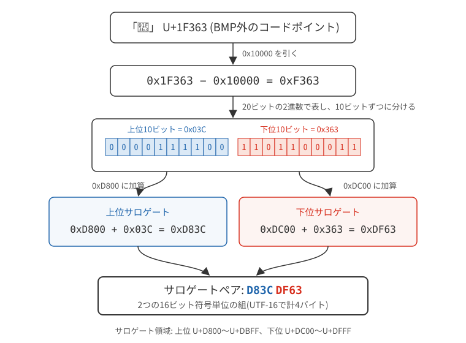
Windowsでは文字の内部表現にUTF-16LEを採用しています(LEの意味については後述)。これは1990年代初頭の技術状況と設計判断を反映したものであり、その後のUnicodeの発展や業界動向とは異なる道筋をたどることになりました。現在のWindowsも、互換性維持のためにこの設計を継続しています。
UTF-8
一方、ASCIIの英数字まで2バイトにすると、従来のASCIIのバイト列とは一致しません。そこで次に、ASCIIとの互換性を保ちながらUnicodeを表す方式を見ます。
UTF-8は、ASCIIの範囲をそのまま1バイトで表せるUnicodeの符号化方式です。1つのスカラー値を1〜4バイトで表します。「あ」「学」などは3バイト、BMP外の漢字や多くの絵文字は4バイトです。ただし、結合文字や絵文字の組み合わせを含む「見た目の1文字」全体では、4バイトを超える場合もあります。
発展：UTF-8のビット配置と「あ」の符号化（初読では省略可）
| コードポイントの ビット数 |
コードポイントの範囲 | 符号化 (右詰め) |
|---|---|---|
7bit |
|
0xxx xxxx |
11bit |
|
110x xxxx 10xx xxxx |
16bit |
|
1110 xxxx 10xx xxxx 10xx xxxx |
21bit |
|
1111 0xxx 10xx xxxx 10xx xxxx 10xx xxxx |
（4ビットごとの空白は読みやすさのためです。UTF-8では、サロゲート U+D800〜U+DFFF、U+10FFFF を超える値、必要以上に長い符号化は不正です。）
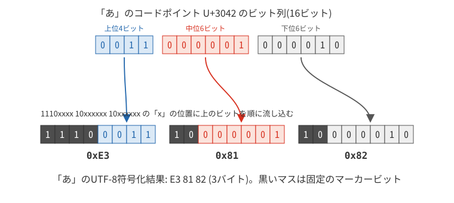
UTF-32
Unicodeのすべてのスカラー値（最大21ビット）を32ビット(4バイト)の固定長で符号化する方式です。ASCIIに含まれる文字だけで書かれた文書では、ASCIIの4倍の領域を消費するため一般には用いられませんが比較的処理が単純になるため、高速化のためにプログラミング言語やデータベース中で用いられます。（後で説明する動的合成や異体字セレクタを考慮すると1文字がかならず4バイトになるわけではありません。）
|
Windows の「メモ帳」では、規定の符号化方式が、長らく使われてきた Shift_JIS から UTF-8 にかわりました。メモ帳では Shift_JIS に相当する符号化方式は ANSI と表示されています。また、やや古いメモ帳では、UTF-16LE は Unicode と表示されています。 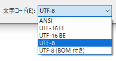 Word, Excel, PowerPoint などのオフィスツールのファイルは文字列を UTF-8 で格納しています。しかし、Excel に CSV ファイルを取り込む際には、Shift_JIS であればそのまま読み込めますが、UTF-8 の場合はかつて、UTF-8 であることの目印として3バイトのバイト列をファイルの先頭につける必要がありました(近年の Excel では UTF-8 対応が改善されており、この目印がなくても正しく読み込める場合が増えています)。この3バイトの目印は UTF-8 シグネチャと呼ばれるもので、詳細は後述のBOMの節で説明します。Unix/Linux 環境では一般には付けない慣習がありますが、Windows のアプリケーションでは広く使用されています。 |
UTF-8とUTF-16はスカラー値ごとの長さが可変です。UTF-32では、BOMなどを除いた正しいデータのバイト数を4で割ればスカラー値の個数がわかります。ただし、どの方式でも、バイト数だけから見た目の文字数を求めることはできません。
UTF-16 と UTF-32 におけるバイトの並び順
UTF-16では文字を表現するのに16ビット(=2バイト)単位でデータを扱います。この2バイトをメモリ上や保存ファイル内でどのような順序で並べるかについて、2つの方式が存在しています。これにより、同じ文字データでも、使われるコンピューターの種類によって異なる並び方で保存されることがあります。この曖昧さを解消するために、ファイルの先頭に特殊な目印を付ける方法があります。これを Byte Order Mark(BOM)と呼び、このファイルが「どちらの並び方で保存されているか」を示します。
-
例えば、日本語の「あ」(コード番号
U+3042)は、同じUTF-16でも、コンピューターによってファイルに0x300x42の順にデータを配置する場合と、0x420x30の順に配置する場合があります。
0x30 0x42 のように人が読むときと同じ順序に数字を配置する方式を、ビッグエンディアン(Big-Endian)といい、
0x42 0x30 のように逆順に数字を配置する方式を、リトルエンディアン(Little-Endian)といいます。
これらの名称は『ガリバー旅行記』のエピソードに由来しています。物語では、ゆで卵を食べる際に「大きい端から割るべきか(ビッグエンディアン)」「小さい端から割るべきか(リトルエンディアン)」で小人の国(リリパット)の住人が2つの派閥に分かれて争いが起きます。
UTF-16の派生形式について
UTF-16には、バイト順序によって以下の派生形式があります。
- UTF-16
-
エンディアン(バイト順序)が指定されていない一般的な形式です。通常、ファイルの先頭にBOMを使用して順序を示します。
- UTF-16BE
-
ビッグエンディアン方式を規定の方式として符号化する方式です。
- UTF-16LE
-
リトルエンディアン方式を規定の方式として符号化する方式です。
UTF-16(BOM付き)とUTF-16LE/BEの違いは微妙ですが、UTF-16LE/BEはエンディアン方式を規定のものとして扱い、BOMが省略されることが多いという点が異なります。一方、単に「UTF-16」と呼ばれる場合は、通常BOMが付いており、そのBOMによってバイト順序を判断します。
では、なぜほとんどの文字が2バイトの Shift_JIS や EUC-JP ではエンディアンの区別が不要なのに、UTF-16やUTF-32のときだけエンディアンが問題になるのでしょうか。
現在のほとんどのコンピューターはバイトアドレッシング方式といって、メモリの領域1バイトごとに番地がふってあり、1バイト単位でデータにアクセスする場合は、メモリに並んでいる順番にデータを取得することができます。ところが、2バイト単位になると、歴史的な経緯もあって、ビッグエンディアン、リトルエンディアンという2通りのデータの格納方法が存在するからなのです。
通常同じコンピューター内でデータを扱う場合には、エンディアンは問題になりません。しかし、文字はコンピューターをまたがってやり取りされるため、方式の違うコンピューター間でも一貫したデータの読み取りができるように取り決めが必要になります。
Shift_JISは1バイト文字と2バイト文字が混在していますが、各文字のバイト列はオクテット単位(バイト単位)で順番に読み込まれて処理されます。 最初のバイトを見て「これは1バイト文字か2バイト文字の先頭か」を判断し、必要に応じて次のバイトを読み込みます。 また、UTF-8 でもオクテット単位でデータを順に格納するため、エンディアンは問題となりません。
UTF-16は16ビットの符号単位、UTF-32は32ビットの符号単位をバイト列に直すため、そのバイト順を定めます。UTF-8やShift_JISはバイトの並びそのものを規定しているので、この選択がありません。これはデータ形式の取り決めであり、CPUが必ず2バイトを一度に読み込むという意味ではありません。どちらのCPUでも、指定されたバイト順のファイルを読み書きできます。
この節の内容はコンピューターの内部設計に関わるため、少し難しく感じるかもしれません。もう少し詳しく説明します。 「エンディアン」とは、複数バイトの情報をメモリ上にどのように並べるかという方式のことです。大きく分けて次の2種類があります。
- ビッグエンディアン
-
人間が読み書きする順序と同じように、上の桁から順に並べる方式です。 例えば、16進法で
1234という数値は、メモリ上では1234の順に配置されます。この方式は直感的で理解しやすいため、多くのファイルフォーマットやネットワーク通信で使われています。
TCPやIPのヘッダーに含まれる複数バイトの整数などは、ビッグエンディアン（ネットワークバイトオーダー）を用います。ただし、インターネットを流れるすべてのデータがこの順序というわけではなく、形式ごとの規定に従います。
-
IPアドレス「
192.168.1.1」を2進数で表すと「11000000.10101000.00000001.00000001」となりますが、これをネットワーク上で送る際には、最初のバイト「11000000」（192）から順に送信します。 -
ポート番号「8080」(16進法で「
1F90」)は、ネットワーク上では「1F」「90」の順で送信されます。
バイト順は通信する双方で一致させる必要があります。IPアドレスは国番号ではなく、経路選択ではネットワークのプレフィックス（先頭部分）を使います。バイト順だけから通信や計算の速さの優劣が決まるわけではありません。
多くの標準的なファイルフォーマットもビッグエンディアンを採用しています。 PNG画像、JPEG画像、音声ファイルのAIFFなどのファイルフォーマットに含まれる数値データにもビッグエンディアンが使用されています。
- リトルエンディアン
-
下の桁から順に並べる方式です。 16進法の
1234という数値が、メモリ上では3412の順に配置されます。パソコンで広く使われるx86などはこの方式です。
julia> collect(reinterpret(UInt8, UInt16[0x1234]))
2-element Vector{UInt8}:
0x34
0x12reinterpret は、同じデータを別の型の並びとして読みます。ビッグエンディアンの環境では順番が逆になります。
BOMによる指定
UTF-16では、ファイルの先頭に、コードポイント U+FEFF (ZERO WIDTH NO-BREAK SPACE)を配置します。
この U+FEFF をUTF-16で符号化した2バイトが、そのままBOMとして機能します。
-
ビッグエンディアンで符号化すると
FE FF -
リトルエンディアンで符号化すると
FF FE
受信側は最初の2バイトを見て、どちらのバイトオーダーで符号化されているかを判断し、その後のデータ部分は、BOMで示されたバイトオーダーで符号化されます。
UTF-32でも、同様にファイルの先頭にコードポイント U+FEFF (ZERO WIDTH NO-BREAK SPACE)を1つ配置します。これをUTF-32で符号化した4バイトがBOMとして機能します。
-
00 00 FE FFならビッグエンディアン -
FF FE 00 00ならリトルエンディアン
と判定します。
プロトコルや実装で合意
UTF-16LE や UTF-16BEという名前で、システム間でのプロトコル仕様や設定ファイル、APIの仕様などで方式を取り決めておきます。この場合、ファイル自体にはバイトオーダーの情報は含まれません。例えばWindowsのAPIやファイルシステムではUTF-16LEが規定です。また、RFC 2781では、"UTF-16"というラベルが指定されたテキストにBOMがない場合はビッグエンディアンと解釈すると規定されています。
UTF-8自体はエンディアン問題がないため本来BOMは不要ですが、主にWindowsシステムでの互換性や文字コード自動検出のためにUTF-8シグネチャ(UTF-8 Signature)という特殊なバイト列をファイルの先頭に付加することがあり「UTF-8 BOM(Byte Order Mark)」とも呼ばれます。具体的には、以下の3バイトの並びです。
EF BB BF
これは、Unicode文字「Zero Width No-Break Space（ゼロ幅改行なし空白）」のコードポイント U+FEFF を UTF-8 でエンコードしたものです。Windowsシステムでの互換性や文字コード自動検出のために使用されますが、問題を引き起こすこともあり、一般には推奨されません。
符号化のトレンド
下の図では、世界中のWebページで使われている文字コードの割合の経年変化をプロットしています。 これをみると、2008年にそれまで最も使われていたASCIIやラテン文字集合が、Unicode(主としてUTF-8)に取って代わられたことがわかります。
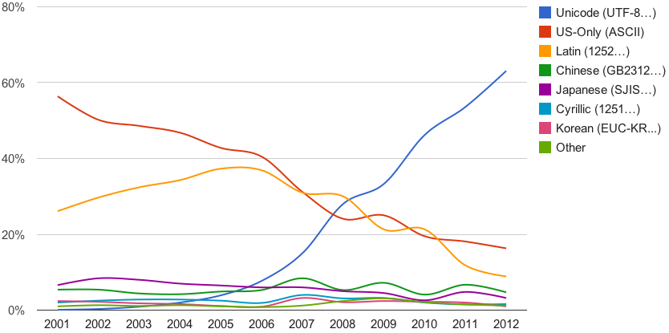
その後も、Unicodeは急速に普及し、現在では約99%のWebサイトでUnicodeが使われていることが、以下のグラフからもわかります。
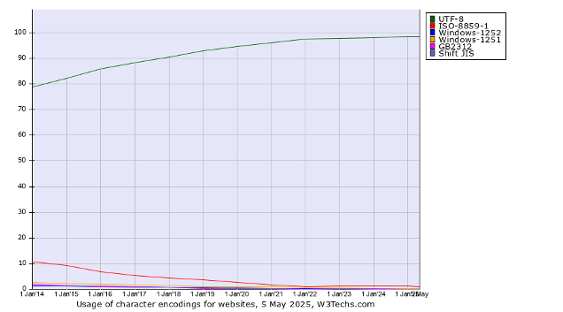
国内も多くのサイトが Unicode(なかでもUTF-8)で記述されていますが、たとえば、以下のサイトは現時点(2026年現在)でも Shift_JIS を用いています。
巨大なサイトになると、符号化方式を変更するのは大変な作業を要するのかもしれません。
参考までに、世界中のWebサイトで使われている言語の割合についても以下にプロットを掲載しておきます。英語が全Webサイトのうち約50%、日本語の割合は現在5%程度であることがわかります。
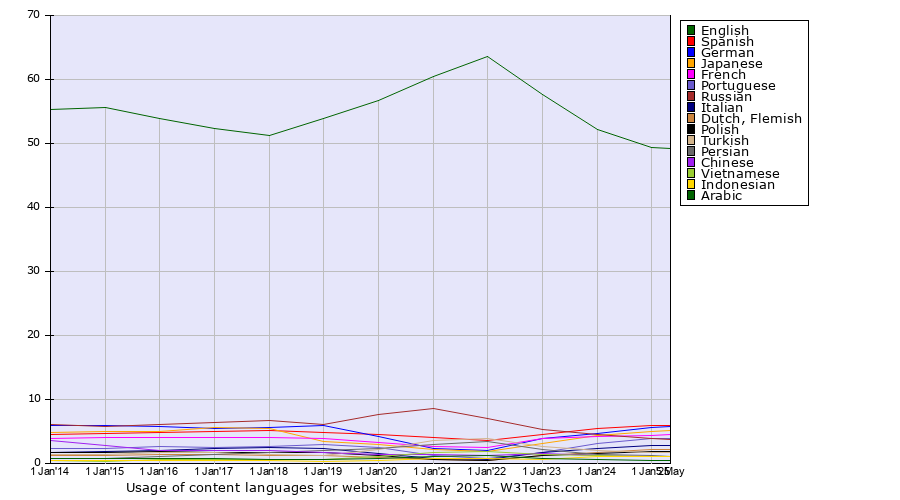
ここまでの解説を以下の図にまとめました。図中の異体字セレクタについてはこれから説明します。
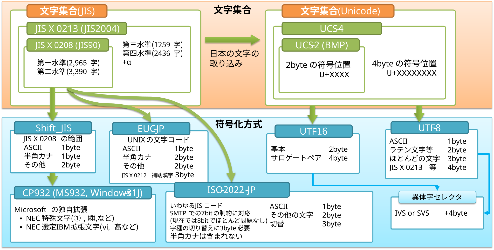
|
Webページを閲覧する際に、意味不明な文字列の羅列が表示される、いわゆる「文字化け」がおこることがあります。 これは、Webブラウザが、閲覧中のWebページが、どの文字コードで書かれているのかを推定する際に、間違ってしまうことが原因の1つです。現在では、特に理由がない限りは UTF-8 でWebページを記述するのがおすすめです。 |
文字化けの正体は、バイト列の「区切り方」と「対応表」の取り違えです。例として、「こんにちは」をUTF-8で符号化したバイト列を、Shift_JISだと思い込んで復号するとどうなるかを見てみましょう。
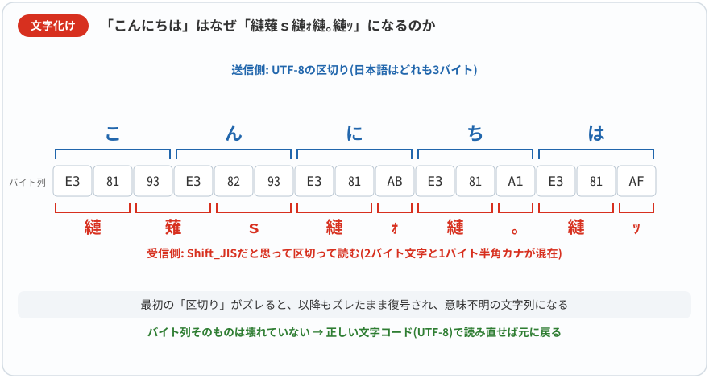
UTF-8では日本語1文字が3バイトであるのに対し、Shift_JISではひらがな・漢字が2バイト、半角カナが1バイトです。区切る単位が異なるため、最初の1文字からすでにズレが生じ、以降もズレたまま無関係な文字に化けてゆきます。日本語のWebやメールでしばしば見かける「縺」だらけの文字化けは、このUTF-8→Shift_JIS誤読の典型例です。逆向きの取り違え(Shift_JISをUTF-8として読む)では、UTF-8として不正なバイト列が現れるため、置換文字「�」(U+FFFD)が並びがちです。元のバイト列が残っていれば、正しい符号化方式で読み直すことで復元できます。ただし、置換文字「�」を含む状態で上書き保存すると元の情報が失われ、符号化方式を変えるだけでは復元できないことがあります。
文字コード発展概略
-
1963年 - ASCII策定（7ビット、128文字。1967年の改訂でほぼ現在の形になる）
-
1969年 - JIS C 6220(のちのJIS X 0201)策定（日本初の文字コード規格）
-
1978年 - JIS C 6226(のちのJIS X 0208)第一版（第一・第二水準漢字を含む）
-
1991年 - Unicode 1.0公開
-
1991〜1995年 - Windows/Mac/UNIXでの文字コードの乱立(Shift_JIS vs EUC vs ISO-2022-JP, etc.)
-
1996年 - Unicode 2.0（サロゲートペア導入）
-
2000年前後 - Webでの文字コード混在問題が深刻化
-
2008年 - Unicodeがインターネット上で最も使われる文字コードに(ASCII・ラテン文字集合を追い抜く)
-
2010年 - 文字情報基盤(MJ)整備事業がIPAにより開始
-
2012年 - Webページの60%以上がUnicodeを採用
-
2024年 - Unicode 16.0（収録文字数 約15万5千）
-
2025年 - Unicode 17.0（収録文字数 約15万9千）
-
2026年現在 - Webページの約99%がUTF-8を採用
機種依存文字と文字化け
「①」や「㈱」などのいわゆる「機種依存文字」と呼ばれていた文字のほとんどは、現在Unicodeに収められているため、Unicodeが扱えるシステムでは相互に問題なくやり取りできます。
かつて、メールでは1バイトあたり7ビットまでの領域を利用して送信する決まりでした。今ではほとんどのシステムで8ビット対応しており、7ビットまでのシステムであっても、内部で送信可能な形式に文字を変換して送信するクライアントがほとんどになりましたので、かつての「機種依存文字」も意識せずに送信することが可能です。実際に、メールについてもスマートフォンを含めて現在ほとんどの電子メールクライアントでは、Unicodeを用いて送信可能です。ただし、依然として1バイトあたり7ビットまでという制限に対応した文字符号化方式である ISO-2022-JP を用いて送信するメールシステムもあるため、「機種依存文字」は依然として文字化けを引き起こす可能性があります。また、「①」「②」などのかつての「機種依存文字」に対応するフォントが受け取り側で存在しない場合も、正しく表示されないことがあります。
文字化けが発生する要因としては主として以下の3つの原因が考えられます。
-
Webブラウザ等の表示アプリケーションが文字符号化方式を誤って解釈
-
フォントの未対応
-
表示ソフトウェアの未対応
1.6. Unicode の応用 (1): 包摂と異体字
ここまでは Unicode のコードポイントを「文字に1対1で割り当てられた番号」として扱ってきました。しかし、漢字の世界には「これは同じ字とみなすべきか、別の字か」という、簡単には決められない問題が常につきまといます。たとえば「辻」「葛」「𠮷」など、字体の細かな違いをどう扱うかは古くから議論があります。本節では、Unicode がこの問題をどう取り扱っているかを見ていきます。
異体字シーケンス(Ideographic Variation Sequence: IVS)
同じ文字と見なせる複数の異なる字体をひとつの文字としてまとめて扱うことを包摂といいます。Unicodeで包摂された字体には同じコードポイントが与えられます。
ひとつの文字にまとめられるといっても、用途によっては異なる字体の文字を表示したいことがあります。このように包摂される字体の中の特定の形を示すために使われるのが異体字セレクタ(Variation Selector)です。
たとえば、「工󠄁」は「工」の異体字であると考えられます。文字としては「工」が「工󠄁」を包摂しているとして、「工」を基底文字として唯一のコードポイント U+5DE5 が割り当てられています。しかし、実用上は両方の字体を使いたいことがあるため、Unicodeでは異体字シーケンス(Ideographic Variation Sequence: IVS)という仕組みが導入されています。これは、同じ文字と考えられる異なる字体の文字(異体字)に対して枝番号を与える仕組みです。異体字セレクタという枝番号を基底文字の後ろにつけることで、同じ文字に対して、異なる240の字体を扱うことが可能になります。基底文字と異体字セレクタを併せたコードポイント列を異体字シーケンスと呼びます。
基底文字のコードポイント＋異体字セレクタ( U+E0100 ～ U+E01EF )
たとえば、 以下のように異体字セレクタにあたるコードポイントを、「工」のコードポイントの後ろに並べるだけで、「工」の異体字を表すことができます。
| Unicode | 対応する字体 |
|---|---|
|
工 |
|
工󠄀 |
|
工󠄁 |
| 基底文字 | 異体字セレクタなし | VS17 (U+E0100) |
VS18 (U+E0101) |
|---|---|---|---|
工 ( |
工 |
工󠄀 |
工󠄁 |
羽 ( |
羽 |
羽󠄀 |
羽󠄁 |
辻 ( |
辻 |
辻󠄀 |
辻󠄁 |
葛 ( |
葛 |
葛󠄀 |
葛󠄁 |
閒 ( |
閒 |
閒󠄀 |
閒󠄁 |
海 ( |
海 |
海󠄀 |
海󠄁 |
齊 ( |
齊 |
齊󠄀 |
齊󠄁 |
|
この表示はフォントによって異なります。見え方に違いがない場合は、使っているシステムやブラウザが異体字セレクタを十分にサポートしていないか、使用しているフォントに該当する異体字のグリフが含まれていない可能性があります。 |
異体字セレクタを付けないときの表示はフォントや言語設定で変わります。また、同じセレクタを別の基底文字に付けても、同じ種類の字体の変化を意味するとは限りません。検索で異体字を区別するかどうかも、用途に応じた取り決めが必要です。
登録されたIVSと字体の対応は、IVD（異体字データベース）で定められています。フォント作者がその意味を自由に入れ替えるものではありません。同じ字体でも明朝体・ゴシック体などのデザインは変わり、未対応のフォントでは指定が反映されない場合があります。「字体の指定」と「輪郭まで同一の画像の指定」は別です。出典：Unicode UTS #37。
Unicodeでは包摂されなかった文字
歴史的な経緯等もあって、同じ文字とみなせるにも関わらず異体字セレクタとして包摂されていない文字もたくさんあります。
以下の2つの表は、包摂関係にあると考えられる2つの字体に異なるコードポイントが与えられている例です。
| 字体 | コードポイント |
|---|---|
高 |
|
髙 |
|
| 字体 | コードポイント |
|---|---|
吉 |
|
𠮷 |
|
JIS X 0208 の第1水準に包摂されていた2つの字体「鷗」と「鴎」は、第一次規格(1978)では「鷗」が用いられました。しかし、第二次規格(1983)では当時のディスプレイ性能や標準的であった1文字24x24ドットのプリンターの状況などから「鴎」の字体が用いられました。後の JIS X 0213 においては両者に異なる符号位置を割り当てました(元の第1水準の位置 1-18-10 に「鴎」、新設の 1-94-69 に「鷗」)。Unicode でもこの区別は引き継がれており、別々のコードポイント(鴎=U+9D0E、鷗=U+9DD7)に割り当てられています。
また、次の2つの字形は書体の違いとして処理されているため、両者は同じコードポイントを持つ文字で、かつ異体字の登録もありません。そのため、異なるフォントを選ぶことでしか両者の違いには対応することができません。
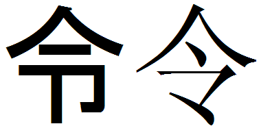
このように、文字コードの体系は様々な経緯で現在の形に至っており、一貫性があるわけでもありません。
1.7. Unicode の応用 (2): 異体字セレクタと外字問題
前節で見た異体字シーケンス (IVS) の仕組みは、抽象的な議論にとどまらず、実際の社会的課題を解決する手段としても活用されています。その代表例が、日本の行政システムにおける「外字問題」です。本節では、JIS X 0213 でも残された限界と、IVS を使ってそれをどう乗り越えようとしてきたかを、文字情報基盤(MJ)から行政事務標準文字(MJ+)に至る取り組みとともに見ていきます。
残された「外字問題」とその背景
JIS X 0213で第三・第四水準として約3,700字の漢字が追加されましたが、それでも特に以下の問題は根本的な解決には至りませんでした。
-
戸籍漢字の完全収録の難しさ: 日本の戸籍に記載されている漢字は古くからのものも含め非常に多様であり、一部の特殊な字体はJIS X 0213でもカバーされませんでした。
-
字体の厳密な区別の問題: 前節で見た「高」と「髙」のように、一般的には同じ文字として扱われるが微妙に字体の異なる文字について、それぞれ独立したコードポイントを割り当てるのが適切かという問題が残されました。
-
自治体システム間の互換性問題: 各自治体が独自に外字を定義していたため、システム間でのデータ交換時に文字化けや情報の欠落が発生していました。
MJ文字情報基盤からMJ+(行政事務標準文字)への発展
これらの課題に対応するため、経済産業省・内閣官房の支援のもと、独立行政法人情報処理推進機構(IPA)が2010年(平成22年度)から「文字情報基盤(MJ)整備事業」を開始しました。これは2002〜2008年に実施された「汎用電子情報交換環境整備プログラム」を引き継ぐ形で、行政で用いられる人名漢字等 約6万文字を整備するプロジェクトです。
事業の中で「IPAmj明朝フォント」と「MJ文字情報一覧表」が開発・公開され、Unicodeに含まれない文字も国際規格化(ISO/IEC 10646)へ申請されました。2017年にはMJのすべての漢字がUnicodeへ収録されました。2020年にはIPAから一般社団法人 文字情報技術促進協議会へ事業成果が移管されています。
その後、2021年に発足したデジタル庁が、地方公共団体の基幹業務システムの統一・標準化に向けて、MJをさらに拡張した文字セット「行政事務標準文字(通称MJ+)」を整備することになりました。MJ+は2024年3月に第1.0版が公表され、MJ約6万文字に対して、戸籍などで実際に使われていた約1万字の文字を追加した約7万文字の文字セットです。
|
「外字問題」とMJ+
名前に珍しい漢字が含まれていると、行政手続きで思わぬ障害に遭遇することがあります。自治体のコンピューターシステムに漢字が登録されておらず、「□」や「〓」といった記号で表示されたり、別の似た字に置き換えられたりする「外字問題」です。これは単なる表示の問題ではなく、システム間でデータをやり取りする際に情報が失われるリスクをかかえています。 MJ+の重要な点は、単に文字図形(グリフ)を集めただけでなく、こうした外字をUnicodeの異体字セレクタの仕組みによって表現できるように設計されたことです。これにより、文字コードの新規割り当てではなく、既存のUnicodeコードポイントに異体字セレクタを組み合わせる方式で、互換性を保ちながら膨大な数の字体をデジタル表現することが可能になりました。 名前は個人のアイデンティティの核心部分です。正確な漢字表記が維持されることは、単なる利便性の問題を超えて、個人のデジタル・アイデンティティを守ることにつながります。 |
MJ+における異体字セレクタの活用方法は以下のとおりです。
-
基底文字とバリエーション: 例えば「辻」という漢字は、Unicode上では単一のコードポイント(
U+8FBB)が割り当てられていますが、実際の字体には複数のバリエーションがあります。 -
異体字セレクタの付加: Unicode上のVS（Variation Selector）を基底文字に付加することで、特定の字体を指定します。
-
IVD（Ideographic Variation Database）への登録: これらの異体字と対応するセレクタの組み合わせは「IVD（異体字データベース）」として国際的に登録され、管理されています。
異体字セレクタによる解決策を実現するためには、対応するフォントの開発が不可欠です。IPAmj明朝フォントなど、MJ文字情報基盤に対応したフォントが開発され、約6万字の日本語文字をカバーしています。MJ+用には、デジタル庁から「行政事務標準文字基本フォントファイル」が整備されており、自治体の基幹業務システムで利用されつつあります。
このMJおよびMJ+の取り組みは、「コードポイントを増やす」という従来のアプローチから、「異体字セレクタとフォントによる解決」という新しい方法への転換を示しています。この方法は、互換性を保ちながら多数の字体をデジタル表現するための現実的な解決策です。
1.8. Unicode の応用 (3): 文字の合成と正規化
異体字セレクタは「基底文字 + 異体字セレクタ」という2つのコードポイントの組み合わせで1つの字を表していました。実は Unicode には、これと同じように 複数のコードポイントを組み合わせて1つの字を表す 仕組みが他にもいくつかあります。これが、Unicodeのプログラマー泣かせなところでもあります。この仕組みのために、Unicodeで書かれた文字が何文字なのか数えるのが面倒ですし、同じ字体の文字に結果的に複数の符号化表現が存在することになります。本節では、ラテン文字のアクセント、日本語の濁点・半濁点、そしてハングルといった具体例をもとに、合成と「正規化」の考え方を見ていきます。
「合成済み文字」と「結合文字列」
先行する文字と組合わせて使う文字のことを結合文字といいます。異体字セレクタも、単独の目に見える字形を持たない結合文字に分類されます。
a とアキュートアクセントを結合した文字 á を Unicode で表現するには2通りの方法があります。
合成済みの字体 á のコードポイント U+00E1 を用いる方法と、 a のコードポイント U+0061 と結合用のアキュートアクセント(つまり結合文字)のコードポイント U+0301 を並べて動的に結合して字体を作る方法の2つです。動的結合をした場合には、複数のコードポイントが連なるため、「（動的）結合文字列」と呼びます。
合成済み文字 |
á |
|
|
結合文字列 |
á |
a + ́ |
|
ハングルなどのより複雑な組合せが可能な文字では、複数のコードポイントを組合せて1つの文字を表現することもできます。
合成済み文字 |
한 |
|
|
結合文字列 |
한 |
ᄒ + ᅡ + ᆫ |
|
濁音と半濁音の合成
次に濁点の動的合成と事前合成された文字の違いを見てみます。
合成済み文字 |
じ |
|
|
結合文字列 |
じ |
し + ゙ |
|
|
濁点や半濁点を含む仮名の表現は「合成済み文字」と「結合文字列」の2通り存在します。実はこの違いが実際に問題を引き起こす例があります。Windowsでは、ファイル名に濁点や半濁点を含む文字がある場合、通常は合成済み文字(NFC相当)で符号化されます。一方、かつてのmacOSのファイルシステム(HFS+)は、ファイル名をNFDに類似した形式に正規化して保存していました(NFC/NFDについては後の「正規化」の節で説明します)。現在のmacOSのファイルシステムAPFSは、ファイル名をどちらの形にも正規化せずそのまま保存しますが、互換性のために両形式を同じ名前として扱う仕組みが残っており、アプリケーションによっては依然として分解された形式のファイル名が作られることがあります。そのため、両方の形式が混在してしまう可能性があります。 Windowsをはじめとする多くの環境では、異なる正規化形式のファイル名は同じ名前に揃えられることなく別の名前として扱われます。この違いによって、macOSからコピーしたファイルの濁点や半濁点が独立した1つの文字として離れて「 macOSでは例えば以下のようにしてファイル名をすべて NFC 形式に書き換えることができます。 |
|
Windowsでは過去のアプリケーションやシステムとの互換性の問題もあり、ZIPアーカイブ内のファイル名の符号化には Shift_JIS(CP932) が使われ続けています。そのため、macOSとの間でZIPファイルで圧縮したファイルをやりとりすると、ファイル名が文字化けしてしまうことがあります。 最近のWindowsでは試験的にファイル名の文字コードが UTF-8 となるように設定変更することが可能ですが、対応していないアプリケーションや、他の Windows マシンとのデータのやり取りを考慮すると、現段階でUTF-8に設定変更するのはリスクがあり悩ましいところです。 |
次にプログラミング言語Pythonを使って上の表の確認をしてみます。
>>> hex(ord('じ'))
'0x3058' # 「じ」のコードポイントは \u3058 であることがわかる
>>> j1='\u3058'
>>> j1
'じ'
>>> j2='\u3057'+'\u3099'
>>> j2
'じ'
>>> j1 == j2
False # 見た目は同じでも実体は違う
>>> len(j1)
1
>>> len(j2)
2 # 1文字なのに長さは2となるほとんどのプログラミング言語では結合文字列を1つの文字と解釈せず、結合文字を独立した文字としてカウントします。
正規化
結合文字列の仕組みは便利なようですが、同じ見た目で合成済み文字としてコードポイントを与えられた文字も存在するため、コンピューター内部には1つの文字に対して複数の符号表現が存在することがあります。そのため、検索の際に問題が発生することがあります。
また、結合文字列がサポートされていない環境では、Windowsのファイル名のような問題が発生します。これらの違いを吸収するためには、同じUnicodeであっても環境に合わせて結合文字列を1つの合成済み文字に変換したり、その逆の変換をしたりする必要があります。このような変換を正規化といい、方向性によって次の2つの標準化形式へ変換する標準化があります。
- 正規化形式C (Normalization Form C / NFC): 正規結合(Canonical Composition)
-
正準等価な文字列を、分解・並べ替えの後、規定に従って可能な箇所を合成した形式（合成しないと規定された文字もあります）
- 正規化形式D (Normalization Form D / NFD): 正規分解(Canonical Decomposition)
-
正準分解の規定がある文字を分解し、結合文字を規定の順序に並べた形式（すべての文字が分解されるわけではありません）
いずれの正規化形式も厳密な定義は技術的な問題を多く含むので詳細には立ち入りません。 また、同様に詳細には触れませんが〈① ＝ 1〉、〈㈱ ＝ (株)〉、〈㋿ ＝ 令和〉、〈《半角カナ》 ＝ 《全角カナ》〉のように、さらに文字の互換性を広い範囲で認めた正規化形式として NFKC, NFKD があります。
以下はテキストファイルの内容を変換して標準出力に出す例です。ファイル名自体は変更しません。UTF-8-MACの扱いは実装に依存するので、一般のUnicode文字列を正規化する実習にはPythonの unicodedata.normalize を使うと明確です。
$ nkf --ic=utf8-mac --oc=utf-8n <ファイル名>
$ iconv -f UTF-8-MAC -t UTF-8 <ファイル名>| 表示される文字 | NFC (合成形式) | NFD (分解形式) |
|---|---|---|
が |
|
|
é |
|
|
한 |
|
|
1.9. Unicode の応用 (4): 絵文字
絵文字は、Unicodeのもっとも目立つ「応用」の1つです。前節で扱った合成の仕組み(複数コードポイントを組み合わせて1字を作る考え方)を、文字の枠を超えて拡張したものとも言えます。日本では様々な携帯電話のキャリアが独自に絵文字を実装していました。そのため、異なるキャリアへ絵文字を含むメールを送ると文字化けが発生していました。2009年にGoogleとAppleにより、絵文字の Unicode への収録が提案され、2010年のUnicode 6.0で日本発祥の Emoji として取り込まれました。2026年現在、3,900文字以上の絵文字が Unicode に収められています(シーケンスを含む)。
絵文字は様々な文字の合成によって文字を表現する仕組みがあります。絵文字には人種や性別等への配慮もあり、たとえば肌の色もコードポイントの組合せによって変えることができます。以下の図は、人と肌の色と絵文字の組合せによって得られる絵文字の例を図示しています。複数の絵文字は、ゼロ幅接合文字(zero width joiner) U+200D を用いて合成します。
-
〈人 👨〉〈肌の色〉〈接合文字〉〈フライパン 🍳〉= 〈料理人 👨🍳〉
-
〈人 👨〉〈肌の色〉〈接合文字〉〈稲 🌾〉= 〈農民 👨🌾〉
-
〈人 👨〉〈肌の色〉〈接合文字〉〈ロケット 🚀〉= 〈宇宙飛行士 👨🚀〉
-
絵文字と肌の色(skin tone)の組合せ
-
👩, 👩🏻
U+1F3FB, 👩🏼U+1F3FC, 👩🏽U+1F3FD, 👩🏾U+1F3FE, 👩🏿U+1F3FF
-
などがあります。
このように Unicode では1文字がコードポイントの複雑な組合せによって決まることもあるため、単純な規則では文字数を数えることができません。そこで、Unicode では利用者からは1文字にみえる文字の単位を書記素クラスタ(grapheme cluster)として、コードポイントの並びを書記素クラスタに分割する方法が示されています(UNICODE TEXT SEGMENTATION)。
|
家族の絵文字：見た目が変わってもコードポイント列は区別する
家族の絵文字の表示は、フォントやOSの版によって、人物を描いたものやシルエットなどに変わることがあります。ただし、見た目の変更と、Unicodeのコードポイント列の変更は別です。以下の例はコードポイント列の構造を確認するためのものです。 家族をあらわす絵文字は、要素となる絵文字の大人と子供の性別などの構成を変えることによって様々な組合せで表示できます(もちろん対応するフォントがないとダメです)。ゼロ幅接合文字(zero width joiner)
以下の例ではコードポイントを省略して、合成文字を「＋」で表します:
最後の例は、絵文字4文字と接合文字3文字の計7文字の結合文字列によって構成されています。家族の絵文字1文字はUTF-8で符号化すると25バイトもあります(4字×4B/字+3字×3B/字=25B)。 |
|
絵文字に使われているフォントはWindows, macOS, Android等のOSや、使っているアプリケーションやアプリケーション中でのフォントの設定によって異なることがあります。たとえば、寿司「🍣」はどのように見えているでしょうか。私にはトロ2貫に見えていますが、環境によってはカッパ巻きになってしまうこともあり、同じ寿司でも随分と印象が変わってしまいます。念のため、私のコンピューター環境(macOS)で見える寿司の絵文字を画像として貼り付けておきます。
私の環境ではテレビの絵文字はとても昭和風でブラウン管です。 |
絵文字が国際標準として整備される過程では、人種・性別・身体的特徴をどう表現するかという、技術的というよりは社会的な論点が継続的に議論されています。日本国内のキャリア間でしか使われていなかった絵文字が、国際的な利用を前提とする Unicode に取り込まれたことで、こうした議論の対象になった面があります。
絵文字の普及を語る代表的な事例に、1999年、当時NTTドコモで働いていた栗田穣崇氏が、携帯電話向けインターネットサービス「iモード」のために作成した176種類の12×12ピクセルの小さなアイコン群があります。携帯電話のメールにおける感情表現の限界を打破するために考案された小さな絵は、日本国内で人気を博し、すぐに他の携帯キャリアも独自の絵文字を開発するようになりました。
その後、Googleでは2007年から Mark Davis らが、絵文字のUnicode標準化をUnicodeコンソーシアムに働きかけ始めました。日本でも2008年7月にソフトバンクから iPhone 3G が発売され、Apple もiOS 2.2 で日本版に絵文字機能を実装(当初はソフトバンクの符号化を流用)。続いて2009年1月、AppleのYasuo Kida氏とPeter Edberg氏が、絵文字をUnicodeに加える正式な提案を提出しました。これらが受け入れられ、2010年10月のUnicode 6.0 で 722文字の絵文字が標準化されました(うち114文字は2009年のUnicode 5.2 でARIB拡張記号として既に追加済み、残り608文字が6.0で新規)。日本のガラケーで使われていた絵文字を Apple と Google が Unicode に取り込んだ動きの背景には、日本でのスマートフォンのシェアを伸ばそうという経営戦略もあったと考えられています。そのため、普遍性のなさそうな日本独特のガラケーの絵文字もたくさんUnicodeのEmojiとして取り込まれています。
絵文字が世界中で急速に普及した理由の一つは、言語の壁を超えて感情や概念を伝えられることでした。オックスフォード辞書が2015年の「今年の言葉」に初めて単語ではなく絵文字「😂」（笑い泣き）を選んだことは、絵文字の文化的重要性を象徴しています。
この由来から、「🏣」（郵便局）や「🏯」（城）、「🎏」（こいのぼり）など日本文化に特有の絵文字も多く含まれていました。次の例は、Unicode 提案時の英語による説明と、対応する絵文字の組み合わせを示しています。日本のガラケー文化に由来する絵文字を国際標準に取り込もうとした際、英語話者にとって馴染みのない概念を、どのような語彙で表現したかが読み取れます。
-
📛(
U+1F4DB): 名札 -
🈵(
U+1F235): 「満席」「満車」記号 -
🈹(
U+1F239): 「割引」記号 -
🍱(
U+1F371): 弁当 -
💮(
U+1F4AE): よくできました(brilliant homework) -
💩(
U+1F4A9): 友好的な顔の犬の糞 (dog dirt with friendly face)
現在、絵文字はUnicodeコンソーシアムの下で厳格に管理され、新しい絵文字の追加には詳細な選考プロセスがあります。当初は日本発の文化だった絵文字は、今や多様性と包括性を重視したグローバルなデジタル言語へと進化しています。
もともとの「字体」という抽象概念に対してコードポイントを割り当てるという当初の理想的な設定からすると、Emojiは随分遠いところまで来ました。Emojiは文字であるにもかかわらず、色や接合文字の様々な規定があり、実装コストも高いものになっています。Unicodeによる文字を正しく表示するためには、プログラマーが相当の労力を掛ける必要が生じています。
1.10. プログラミング言語とUnicode
ほとんどのプログラミング言語では文字列をデータとして扱う仕組みが備わっています。多くの言語でコードポイントによる文字の記述などUnicodeに準拠した文字列の扱いが可能です。ただし、その符号化方式は言語によってまちまちです。
UTF-16の符号単位 |
JavaScript, Java, Scala, C# の長さ・添字の基本単位 |
|---|---|
UTF-8の符号単位（バイト） |
JuliaのString（lengthはコードポイント数） |
バイト列 |
Goのstring。UTF-8以外のバイト列も格納できる。rangeはUTF-8として解釈する |
Unicodeコードポイント |
Pythonのstr。CPythonは文字範囲に応じて格納幅を選ぶ |
たとえばJavaの文字列の添字はUTF-16の符号単位を数えますが、実装が必ず1単位を2バイトのメモリに格納するとは限りません。Perlでも、バイト列とUnicodeの文字列を区別する必要があります。
プログラミング言語Pythonで「㋿、㈱、㌔、Ⅶ、㊾」をNFKCによって正規化してみます。
>>> import unicodedata
>>> unicodedata.normalize('NFKC', '㋿、㈱、㌔、Ⅶ、㊾')
'令和、(株)、キロ、VII、49'プログラミング言語Juliaで「👩❤️💋👨」の文字数とバイト数を確認してみます(Julia は文字列を UTF-8 で符号化しています)。コードポイント U+FE0F は、絵文字で使われる異体字セレクタで、カラフルな絵文字がある場合は、その絵文字を選ぶように指定するものです。
julia> kiss="\U1F469\u200d\u2764\uFE0F\u200D\U1F48B\u200D\U1F468" # コードポイントで絵文字を入力
"👩\u200d❤️\u200d💋\u200d👨" # ばらばら！
julia> print(kiss)
👩❤️💋👨 # 1つの絵文字になった
julia> length(kiss) # 文字数
8
julia> ncodeunits(kiss) # バイト数
27次にプログラミング言語 JavaScript で UTF-16 で符号化したときのバイト数を確認してみます。JavaScript は文字列を UTF-16 で符号化しています。「👩❤️💋👨」は計8つのコードポイント(👩, ZWJ, ❤, VS-16, ZWJ, 💋, ZWJ, 👨)で構成されており、人物を表す3つの絵文字(👩, 💋, 👨)はサロゲートペアを用いて4バイトで符号化され、残りの5つ(ZWJ×3, ❤, VS-16)はそれぞれ2バイトで符号化されますので、3字×4B/字+5字×2B/字=22B となります。
> kiss="\u{1F469}\u200d\u2764\uFE0F\u200D\u{1F48B}\u200D\u{1F468}" // コードポイントで絵文字を入力
'👩❤️💋👨'
> kiss.length * 2 // UTF-16で符号化したバイト数（BOMなし）
22JavaScriptの \u{…} はコードポイントを指定する表記です。kiss.length はUTF-16の符号単位の数であり、length * 2 はUTF-16としてのバイト数です。実際の処理系のメモリ使用量を測っているわけではありません。
|
ハンバーガーの絵文字 🍔 Unicodeの絵文字でハンバーガーの具材の順番が問題になったことがありました。2017年、あるユーザーがGoogleとAppleのハンバーガー絵文字を比較する書込みを当時のTwitterにしたことから議論が始まります。 Googleの絵文字では、チーズがパティの下にあり、Appleではチーズがパティの上にあり、レタスの位置も両社の絵文字では異なっていました。そこで、チーズがパティの上か下かで論争に発展し、どちらが正しい順番なのかが議論になりました。ハンバーガーチェーン店に確認する人やメディアも現れ、パティの上にチーズを乗せるのが一般的だという結論になりました。 つまり、Googleの絵文字の順番は一般的ではなかったのです。この騒動を受けて、Googleの当時のCEOは「みんなが正しい順番で合意すれば月曜日にすぐ直す」とツイート。結局、Android 8.1でGoogleは絵文字のチーズの位置を、パティの上に修正しました。 絵文字はUnicodeコンソーシアムが標準を定めていますが、フォントは各社が独自にデザインするため、同じ絵文字でも見た目が異なることがあります。 |
1.11. Windows と macOS で文字コードの確認
Windows の PowerShell や macOS の Terminal を使ったことがある人は、文字のコンピューター内部での表現を直に確認してみてください。
Windows の PowerShell での確認方法
ABCabc の内部表現をしらべます。
PS> "ABCabc" | Format-Hex
00 01 02 03 04 05 06 07
00000000 41 42 43 61 62 63 ABCabc
A B C a b cファイル text.txt の内部表現をしらべます。
PS> Format-Hex text.txt
00 01 02 03 04 05 06 07 08 09 0A 0B 0C 0D 0E 0F
41 42 43 61 62 63 0D 0A
A B C a b c CR LFmacOS の Terminal での確認方法
ここでは、文字コード変換ツール nkf のインストールを前提にしています。
文字列 あいうえお の UTF-8 による符号化を確認しています(3行目は参考に付け加えた行です)。
$ echo "あいうえお" |nkf -u | xxd -g 3
00000000: e38182 e38184 e38186 e38188 e3818a 0a
UTF8 あ い う え お LF次の例では、文字列 あいうえお の UTF-16(BE:ビッグエンディアン) による符号化を確認しています。
$ echo "あいうえお"|nkf -w16B | xxd -g 2
00000000: feff 3042 3044 3046 3048 304a 000a
UTF16BE BOM あ い う え お LF文字列 あいうえお の UTF-16(LE:リトルエンディアン) による符号化を確認しています。上記のUTF-16(BE)と比較してみてください。人が目視する際には16進法の4桁の数字がそのまま上位下位の順に並んでいますのでビッグエンディアンの方が認識しやすいと思います。
$ echo "あいうえお"|nkf -w16L | xxd -g 2
00000000: fffe 4230 4430 4630 4830 4a30 0a00
UTF16LE BOM あ い う え お LF文字列 あいうえお の Shift_JIS による符号化を確認しています。
$ echo "あいうえお"|nkf -sLw | xxd -g 2
00000000: 82a0 82a2 82a4 82a6 82a8 0d0a
SJIS あ い う え お CRLFUTF-8の場合は以下のコマンドを用いると対応する文字を合わせて表示してくれるので便利です。
$ echo "あいうえお" | nkf -u | od -tx1c
0000000 e3 81 82 e3 81 84 e3 81 86 e3 81 88 e3 81 8a 0a
あ ** ** い ** ** う ** ** え ** ** お ** ** \n
0000020nkf は文字コード推定など様々な機能がある便利なツールですが、BMP外(U+FFFF を超える)のコードポイントをもつ文字に対しては、うまく変換できないようです（たとえば、「𠮷」を含む文字）。macOSやLinuxなどで、実データの文字コード変換をするときには、iconv を使うことを推奨します。
|
文字コードをめぐる標準化には様々な苦労がありました。1980年代からワープロやコンピューターが普及しはじめると、標準化に対する理解不足や技術者に対する偏見から有名作家が工業規格としての文字の標準化を「文化破壊」と貶めることもありました。Unicodeの標準化では、国家間での様々な利害や価値観が衝突するため、文化、文字、技術に対する深い理解と、根気強い交渉力が必要となります。 このような苦労の過程を実際に標準化に携わった著者が記した
はおすすめです。 |
2. 理解度チェック(練習問題)
ここまでの内容について、理解度を確認するための練習問題です。各問題の解答と解説は問題の直下に折りたたんでありますので、自分なりの答えを考えてから確認してください。
2.1. 基礎: ASCII / 改行コード / 用語
-
ASCIIは7ビットですべての文字位置を特定できる
-
ASCIIは1963年に米国で策定された文字コードである
-
ASCIIには日本語のひらがなが含まれる
-
ASCIIの大文字と小文字は、6ビット目を反転するだけで相互変換できる
-
ASCIIの制御文字は、画面表示のための文字である
解答
正解: 1, 2, 4
3 は誤り(ASCIIは英数字と記号、制御文字のみ)。5 は誤り(制御文字はディスプレイやプリンターの動作などをコントロールするための文字)。
-
Unix/Linux と現代の macOS は LF (
\n) を改行コードとして用いる -
Windows は CR+LF (
\r\n) を改行コードとして用いる -
CR の文字コードは
0x0Aである -
macOSやLinuxで作成されたテキストファイルをWindowsで開くと、改行が認識されない場合がある
解答
正解: 1, 2, 4
3 は誤り。CR (Carriage Return) は 0x0D、LF (Line Feed) が 0x0A です。
-
符号化文字集合は、コンピューター内部での実際のバイト表現を定める
-
文字符号化方式は、各文字に対する番号(コードポイント)を定める
-
同じ符号化文字集合(例: Unicode)に対して、複数の文字符号化方式(例: UTF-8, UTF-16, UTF-32)が存在しうる
-
ASCIIや JIS X 0201 では、符号化文字集合と文字符号化方式の概念は明確に分離されていた
解答
正解: 3
1 と 2 は説明が逆。4 は誤りで、ASCIIや JIS X 0201 が作られた当時は両者の概念は未分化でした。
2.2. Unicode 以前の日本語符号化方式
-
ISO-2022-JP はモード切替によって複数の文字集合を扱い、各バイトの最上位ビットを使わないため、7ビット通信路でも安全に送れる
-
Shift_JIS は半角カタカナを1バイトで、JIS X 0208 の文字を2バイトで符号化する
-
EUC-JP は半角カタカナを1バイトで、JIS X 0208 の文字を2バイトで符号化する
-
EUC-JP では日本語に関わるすべてのバイトが最上位ビット1なので、ASCIIと重ならない
-
Shift_JIS では2バイト文字の2バイト目に
0x5C(ASCIIの\と同じ値)が現れることがある
解答
正解: 1, 2, 4, 5
3 は誤り。EUC-JP では半角カタカナを 2バイト(先頭の単独シフト 0x8E + コード)で符号化します。1バイトで符号化するのは Shift_JIS のほうです。EUC-JP は、日本語に関わるバイトの最上位ビットをすべて1にする設計を貫いたために、半角カタカナのバイト数が増えるという代償を払っています。
-
自己同期性とは、バイト列の途中から読み始めても文字境界を判定できる性質である
-
UTF-8 と EUC-JP はいずれも自己同期性をもつ
-
Shift_JIS は自己同期性をもち、いかなる場合も2バイト目をASCIIと取り違える危険がない
-
自己同期性は検索やセキュリティの観点から重要である
解答
正解: 1, 4
2 は誤り。完全な自己同期性をもつのはUTF-8です。EUC-JPはASCIIのバイトと日本語のバイトが重ならないというだけで、2バイト文字同士の境界は途中からは判定できません。3 も誤り。Shift_JIS は2バイト文字の2バイト目がASCIIの範囲(例えば 0x5C = \)と重なることがあり、自己同期性をもちません。これがクロスサイトスクリプティング(XSS)などのセキュリティ問題を引き起こした例があります。
2.3. Unicode の基礎: 符号化方式とBOM
-
半角英数字 → 1バイト、漢字「学」(
U+5B66) → 3バイト -
半角英数字 → 2バイト、漢字「学」 → 4バイト
-
半角英数字 → 1バイト、漢字「学」 → 2バイト
-
半角英数字 → 1バイト、漢字「学」 → 4バイト
解答
正解: 1
UTF-8では、ASCIIに含まれる文字(U+0000〜U+007F)は1バイト、U+0080〜U+07FF は2バイト、U+0800〜U+FFFF(漢字を含むほとんどの日本語)は3バイト、BMP外(U+10000 以上)の文字(多くの絵文字など)は4バイトで符号化されます。「学」(U+5B66)は3バイト範囲です。
-
UTF-16 の BOM
FE FFはビッグエンディアンを示す -
UTF-16 の BOM
FF FEはリトルエンディアンを示す -
UTF-8 の BOM (シグネチャ) は
EF BB BFで、エンディアンを示すために必要である -
BOM の正体はコードポイント
U+FEFF(ZERO WIDTH NO-BREAK SPACE)である
解答
正解: 1, 2, 4
3 は誤り。UTF-8 はバイト単位で処理されるためエンディアンの問題は本来発生せず、BOM は不要です。Windows 環境などでファイルが UTF-8 であることを示すための「シグネチャ」として使われることはありますが、エンディアンを示すためのものではありません。
2.4. Unicode の応用: 包摂・正規化・絵文字
-
包摂とは、字形の異なる複数の文字を1つの基底文字としてまとめ、同じコードポイントを与える仕組みである
-
異体字セレクタを基底文字の後ろに付加することで、最大240種の字体バリエーションを表現できる
-
異体字セレクタを使えば、表示されるグリフはフォントによらず常に同じになる
-
「高」と「髙」のように、同じ字とみなせるが異なるコードポイントを持つ字もUnicodeに存在する
解答
正解: 1, 2, 4
3 は誤り。登録されたIVSは字体を指定しますが、明朝体・ゴシック体などのデザインまで同一にはしません。対応する字形がないフォントでは指定が反映されない場合もあります。
-
合成済み文字
U+304Cは1コードポイント、結合文字列U+304B U+3099は2コードポイントである -
ほとんどのプログラミング言語で文字列の長さを取ると、結合文字列のほうが大きくなる
-
NFC(正規結合)による正規化では、結合文字列が合成済み文字に変換される
-
NFD(正規分解)による正規化では、合成済み文字が結合文字列に変換される
解答
正解: すべて(1, 2, 3, 4)
NFC は合成済み形式へまとめる方向、NFD は結合文字列に分解する方向の正規化です。同じ字に対して複数の符号表現が存在することは、検索などで問題を引き起こす要因となるため、何らかの正規化形式に揃えて扱うことが重要です。
-
4つの絵文字をゼロ幅接合文字(ZWJ,
U+200D)で連結して構成されている -
UTF-8 で符号化すると 25 バイトを占める
-
利用者が目にする1つの絵文字に対して、コードポイントは7つ用いる
-
利用者から1文字に見える単位を「書記素クラスタ(grapheme cluster)」と呼ぶ
解答
正解: すべて(1, 2, 3, 4)
4つの絵文字(👨, 👩, 👧, 👦)はそれぞれ4バイト、3つのZWJはそれぞれ3バイト(BMP内のため UTF-8 で3バイト)です。合計 4×4 + 3×3 = 25バイトとなります。
3. 問題
１. ASCIIコードで表現できる文字数は何文字か。
a) 64文字
b) 128文字
c) 256文字
d) 512文字
２. ASCIIで記録した英数字だけの文字列 ABC123 と同じバイト列になる文字符号化方式はどれか（BOMは付けない。複数回答可）。
a) ISO-2022-JP
b) Shift_JIS
c) EUC-JP
d) UTF-8
e) UTF-16
３. Unicodeの符号化方式について、正しい説明を選べ。
a) UTF-8は、Unicodeのすべてのコードポイントを1バイトで表現できる
b) UTF-16は、Unicodeのすべてのコードポイントを2バイトで表現できる
c) UTF-32は、Unicodeのすべてのスカラー値を4バイトで表現できる
４. 日本で初めて制定された文字コード規格である JIS X 0201 で、ASCIIに加えて日本独自の文字として追加された字種は何か。
4. 問題の解答
まず自分で解いてから読むことをすすめます。
-
ASCIIコードは7ビットなので、27=128 となり、最大128文字。ただし、符号化では1文字1バイトでファイルに記録されています。
-
正解は (a), (b), (c), (d)。この文字列はどれも英数字1字につき1バイトで、
41 42 43 31 32 33（16進）となる。(e)のUTF-16では1字につき2バイトが必要。ISO-2022-JPのモード切替や、JIS X 0201の円記号などを含む一般の文字列の互換性は、別に考える必要がある。 -
(c)のみが正解。(a),(b)については可変長であり、UTF-8は1バイトから4バイトの可変長、UTF-16は2バイトと4バイトの可変長の符号化方式である。
-
新たに追加された字種はカタカナ(いわゆる半角カタカナ)です。
以上です